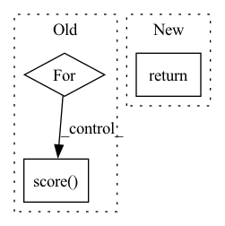

Pattern ID :29987

Before Change
:rtype: ChunkScore
chunkscore = ChunkScore()
for correct in gold:
chunkscore.score(correct, self.parse(correct.leaves()))
return chunkscore
After Change
@deprecated("Use accuracy(gold) instead.")
def evaluate(self, gold):
return self.accuracy(gold)
def accuracy(self, gold):
In pattern: SUPERPATTERN
Frequency: 3
Non-data size: 3
Instances
Fragment ID: 88945097
Project Name: nltk/nltk
Commit Name: a28d256b9ab2af4373fac63375259c70f327459e
Time: 2021-12-15
Author: 37621491+tomaarsen@users.noreply.github.com
File Name: nltk/chunk/api.py
M Class Name: ChunkParserI
N Class Name: ChunkParserI
M Method Name: evaluate(2)
N Method Name: evaluate(2)
M Parent Class: ParserI
N Parent Class: ParserI
M File Name: nltk/chunk/api.py
N File Name: nltk/chunk/api.py
M Start Line: 48
M End Line: 51
N Start Line: 40
N End Line: 40
'>
Before Change
// Getting ROUGE scores
for ex, mo in zip(inputs, prediction_output):
score = self._scorer.score(
target=ex["context"],
prediction=self._get_pred_string(mo["generated_text"]))
mo["rougeL"] = float(score["rougeL"].fmeasure)
yield mo
After Change
// "tokens": self.tokenizer.convert_ids_to_tokens(tokenized_text.input_ids[i]),
})
return prediction_output
def input_spec(self):
'>
Fragment ID: 88945096
Project Name: pair-code/lit
Commit Name: 0cda2a5421c024a005011762b80e964368944fb2
Time: 2022-07-01
Author: ryanmullins@google.com
File Name: lit_nlp/examples/models/tydi.py
M Class Name: TyDiModel
N Class Name: TyDiModel
M Method Name: predict_minibatch(2)
N Method Name: predict_minibatch(2)
M Parent Class: lit_model.Model
N Parent Class: lit_model.Model
M File Name: lit_nlp/examples/models/tydi.py
N File Name: lit_nlp/examples/models/tydi.py
M Start Line: 61
M End Line: 95
N Start Line: 43
N End Line: 61
'>
Before Change
print("Answers------->\n")
print(prediction_output)
// Getting ROUGE scores
for ex, mo in zip(inputs, prediction_output):
score = self._scorer.score(
target=ex["context"],
prediction=self._get_pred_string(mo["generated_text"]))
mo["rougeL"] = float(score["rougeL"].fmeasure)
yield mo
After Change
// printing for debugging
// print("Answers------->\n")
// print(prediction_output)
return prediction_output
// Getting ROUGE scores
// for ex, mo in zip(inputs, prediction_output):
// score = self._scorer.score(
'>
Fragment ID: 88945095
Project Name: pair-code/lit
Commit Name: 3f2ae88736736f16941b88e0cce30382d7d9a24f
Time: 2022-06-28
Author: 31214277+aryan1107@users.noreply.github.com
File Name: lit_nlp/examples/models/tydi.py
M Class Name: TyDiModel
N Class Name: TyDiModel
M Method Name: predict_minibatch(2)
N Method Name: predict_minibatch(2)
M Parent Class: lit_model.Model
N Parent Class: lit_model.Model
M File Name: lit_nlp/examples/models/tydi.py
N File Name: lit_nlp/examples/models/tydi.py
M Start Line: 71
M End Line: 106
N Start Line: 72
N End Line: 99